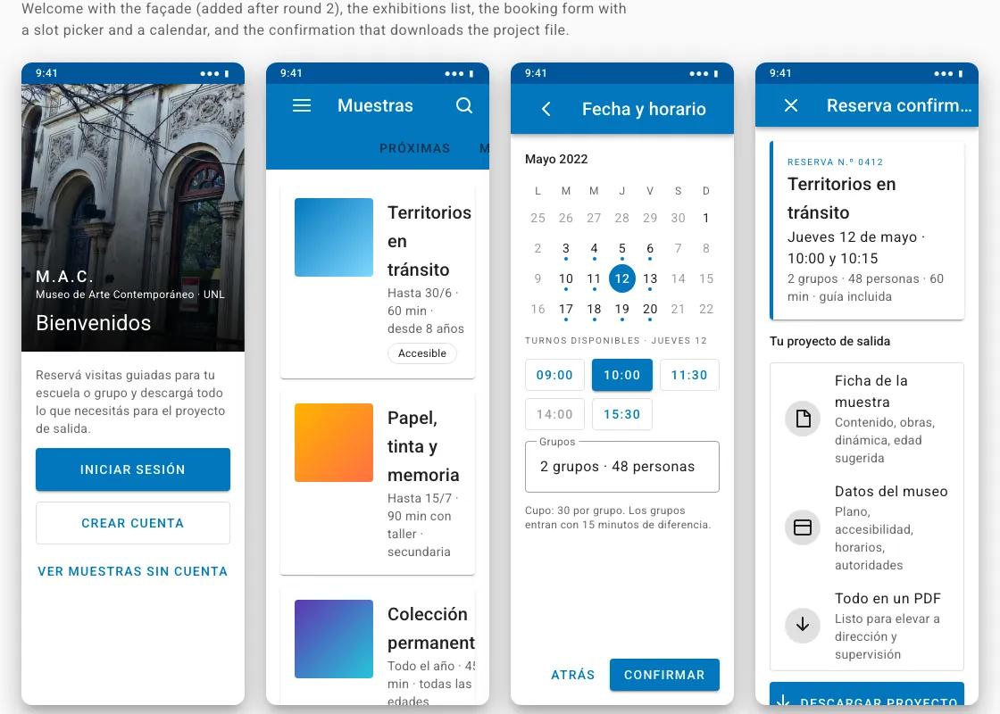
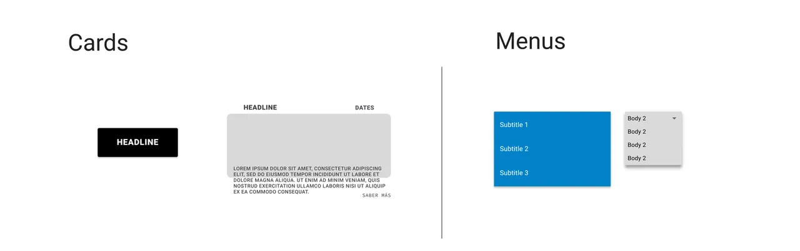

MAC: booking a school visit to the museum, paperwork included
Booking app for the Museum of Contemporary Art of the National University of the Littoral, in Santa Fe. Research, personas, usability tests and the final interface, from interview to mockup.
The problem
Schools in Santa Fe need a formal project, submitted 30 days in advance and approved by school management and supervision, before taking students out. The museum took bookings by phone, so teachers never had the information that project asks for: exhibit content, duration, capacity, accessibility and schedules.
PERSONA 1
Claudia, vice principal. She runs a large school with many groups and shifts. She needs all the logistics to plan an outing for several classes.
PERSONA 2
Brenda, social worker. She visits with adults with intellectual disabilities. She needs to know whether the content works for them and whether the building is accessible: ramps, wheelchairs, sign language.
The goal of both: book a guided visit and leave with a downloadable file that already contains everything the project form asks for.
The method
Semi-structured interviews, two personas, journey maps, storyboards, paper and digital wireframes, two rounds of usability tests and high-fidelity mockups.
What two rounds of tests changed
Round 1
- The exhibit information has to include a general description, activity format, works, price, suggested age, duration and rules.
- The museum information: facade, floor plan, history, team, purpose, why visit it and opening hours.
- What gets downloaded is not just the confirmation but the whole exhibit dossier, organized.
Round 2
- A welcome screen with the photo of the facade, before logging in, so people recognize the building.
- Date and time with a direct slot picker and a calendar of available dates, instead of typed text.
- Accessibility: enough contrast, capitalization and contrast settings, no transition that depends on swiping, and screen reader support.
The final screens


Contrast, calculated
| Data point | Source |
|---|---|
| Primary blue #0277BD on white, and white on that blue | 4.8:1, WCAG calculation; passes AA for normal text |
| Primary text at 87 % black on white | 16.1:1, WCAG calculation |
The components
Every component, with all its states: buttons, fields, selection, chips, cards, menu and dialog. It is in English.
The components were created in Figma using Material Design 2.